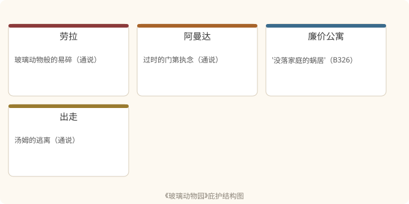

玻璃动物园
一、基本信息
| 作者 | 田纳西·威廉斯 |
|---|---|
| 成书/出版 | 1944年（Britannica B326：The Glass Menagerie (1944)；1945年百老汇首演说通说待核） Tennessee Williams — Encyclopaedia Britannica（百科全书） |
| 国别/地区 | 美国 |
| 时代 | 现当代 · 20世纪40年代 |
| 体裁 | 戏剧（回忆剧） |
| 语言 | 英语 |

《玻璃动物园》庇护结构图（主题·结构图）
二、创作背景
Britannica（B326）：'In it Williams portrayed a declassed Southern family living in a tenement.'——剧中描写一个没落的南方家庭蜗居廉价公寓。
作者页（B326）：威廉斯流派 Southern gothic；'plays reveal a world of human frustration in which sex and violence underlie an atmosphere of romantic gentility'。
题材（通说待核）：跛足女儿劳拉与她的玻璃动物收藏、母亲阿曼达的过往执念、儿子汤姆的出走。
三、内容脉络
没落南方家庭：母亲温德的过去、女儿的封闭与玻璃动物、儿子的出走（细节通说待核——B326未载剧情）。
'绅士访客'来访与幻想的破灭（通说待核）。
四、主要人物表
| 人物 | 身份 | 说明 |
|---|---|---|
| 阿曼达 | 母亲 | （通说待核，B326未载） |
| 劳拉 | 跛足女儿 | （通说待核，B326未载） |
| 汤姆 | 儿子/叙述者 | （通说待核，B326未载） |
五、主题与艺术特点
- '没落'家庭与廉价公寓（B326：declassed Southern family living in a tenement）。
- 玻璃动物园：易碎的自我庇护（通说待核）。
- 回忆剧的形式——叙述者穿梭记忆（通说待核）。
六、影响与评论
- Britannica：The Glass Menagerie (1944)——威廉斯成名作（作者页定位：此后1947年即以《欲望号街车》获普利策——B326）。
Tennessee Williams — Encyclopaedia Britannica（百科全书） - Britannica：Southern gothic 流派标注（B326）。
Tennessee Williams — Encyclopaedia Britannica（百科全书）
七、阅读建议
难点
- 回忆剧的叙述结构。
- 大萧条时代圣路易斯背景（通说待核）。
- 《玻璃动物园》中译本（人民文学/上海译文等——通说待核）。
- 英文原版。
威廉斯入门首选，再读《欲望号街车》。
八、待核实
- 1944年首演（芝加哥说）与1945百老汇说核对。
- 阿曼达/劳拉/汤姆人名核对（B326未载）。
- '回忆剧'（memory play）术语归属待核。